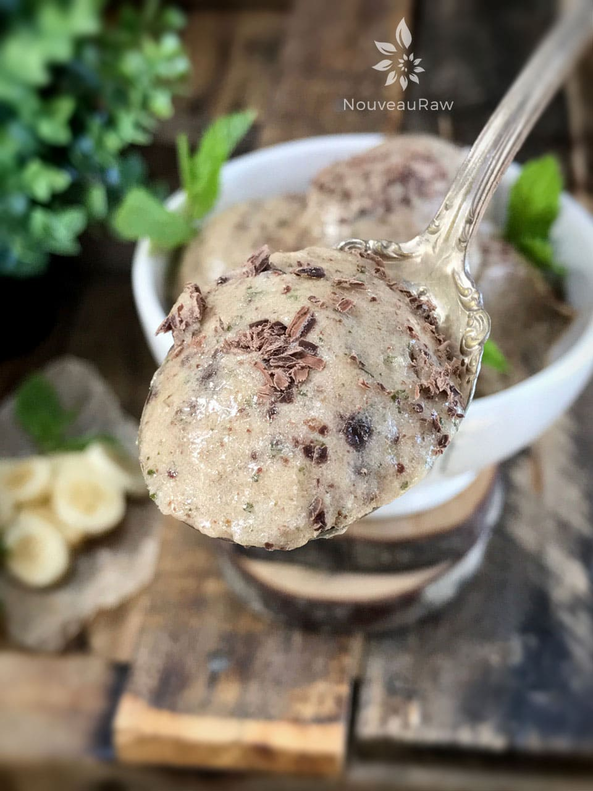

Minty Chocolate Banana Ice Cream
~ raw, vegan, gluten-free ~
This minty chocolate chip banana ice cream is made without an ice cream maker so that you can have delicious and creamy homemade ice cream within a few minutes. This ice cream is about as simple as it can get. And here’s the kicker… it is dairy-free, no added sugars, fat-free, nut-free, soy-free, grain-free, vegan, raw, paleo, and gluten-free.
Incredible Edible Mint
Well hello, you mesmerizing green beauty. Yes, I am talking to you, you fresh leafy herb. Mint is known for many wonderful health benefits. It is a palate cleanser, promotes digestion, soothes stomachs in cases of indigestion or inflammation.
They even state in a recent study that mint has an effect on alertness, retention, cognitive function and memory retention. It said more, but I don’t remember everything it said. (haha) Obviously, I need more mint in my diet.
I am going to turn you loose right now so you can get busy creating this delicious and nutritious treat. Be sure to get the kiddos involved if you have them. It’s quite magical to see how frozen bananas can transform into a creamy, velvety ice cream. Enjoy! Blessings, amie sue
Yields 32 oz
- 4 cups (600 g) sliced frozen ripe bananas
- 6 (100 g) Medjool Dates, pitted
- 1 tsp ( 8 g) liquid stevia
- 1 cup (11 g ) fresh mint leaves, minced or 1/4 tsp mint extract
- 1/2 cup (87 g) raw cacao nibs or raw chocolate chips
- dash sea salt
Preparation:
- Start with ripe bananas. Peel, slice, and freeze them until solid.
- I used 4 really large bananas, will vary based on the size.
- Place the frozen bananas in the food processor, fitted with the “S” blade.
- You can also use a high-powered blender with a tamper.
- Add the dates, stevia, and salt and blend until you achieve a soft-serve texture.
- Stevia or any sweetener may not be required at all. It depends on your sweet tooth and how ripe the bananas were.
- Add the mint and cacao nibs, blending just until everything is mixed. Don’t over-blend.
- You can serve immediately, or transfer to a container and freeze an additional 30 minutes, then scoop out with an ice cream scoop.

© AmieSue.com